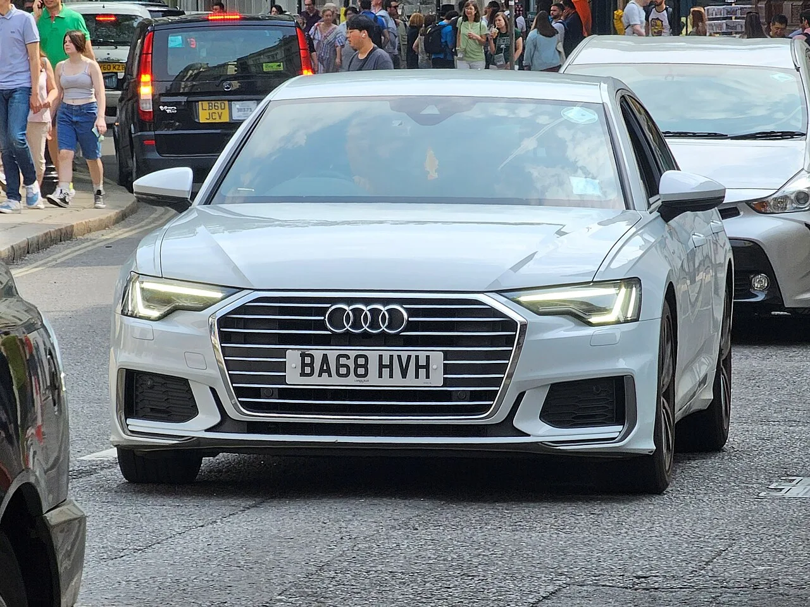

▲ 벤츠 E클래스 — 인증중고차 실거래가 기준으로 세 브랜드 중 잔존율이 가장 높게 나타난 모델이다
"3년 타도 신차값의 70%는 남는다"는 국산차 감가율 기사를 쓰면서, 자연스럽게 궁금증이 하나 남았습니다. 그렇다면 수입 럭셔리 세단은 정반대의 그림일까요. 같은 준대형 체급으로 국내에서 가장 많이 팔리는 벤츠 E클래스, BMW 5시리즈, 아우디 A6의 인증중고차 실거래가를 모아 비교해봤습니다. 결과는 예상보다 훨씬 브랜드별 편차가 컸습니다.
1. 벤츠 E클래스, 세 브랜드 중 가장 방어력이 좋다
인증중고차 매물을 기준으로 보면 벤츠 E클래스의 잔존율이 가장 안정적입니다. 2019년 12월식 E300 4매틱 익스클루시브(신차가 8,230만원)는 7,100만원에 거래돼 잔존율 86.3%를 기록했고, 2020년 6월식 E300 4매틱 AMG 라인(신차가 8,110만원)은 7,100만원으로 87.5%까지 나타났습니다. 주행거리가 2,241km에 불과한 2020년 9월식 E300 4매틱 익스클루시브도 7,000만원에 거래돼 83.4%를 유지했습니다. 다만 예외도 있습니다. 상대적으로 연식이 오래된 2018년 10월식 E300 아방가르드(신차가 7,510만원)는 5,100만원까지 내려가 잔존율 67.9%를 기록했는데, 이는 연식이 2년 이상 차이 나는 만큼 자연스러운 결과로 보입니다.
2. BMW 5시리즈, 편차가 가장 크게 벌어진다

▲ BMW 5시리즈 — 같은 520d 트림이라도 연식과 주행거리에 따라 잔존율이 56.9%에서 73.7%까지 넓게 갈렸다
BMW 5시리즈는 세 브랜드 중 잔존율 편차가 가장 두드러졌습니다. 2020년 8월식 520d 럭셔리 플러스(신차가 6,780만원)는 4,900만원에 거래돼 잔존율 72.3%를 기록했고, 주행거리 5,680km에 불과한 같은 트림·연식 매물은 5,000만원으로 73.7%까지 나타났습니다. 반면 2017년 11월식 520d M 스포트 플러스(신차가 7,200만원)는 4,100만원까지 떨어져 잔존율 56.9%에 그쳤습니다. 연식이 3년 가까이 차이 나는 매물을 비교한 결과이기는 하지만, 같은 520d 트림 안에서도 이 정도의 격차가 발생한다는 점은 눈여겨볼 대목입니다. 5시리즈는 신차 프로모션 할인 폭이 상대적으로 큰 편으로 알려져 있는데, 이런 할인 관행이 중고 시세에도 연쇄적으로 영향을 주는 것으로 풀이됩니다.
3. 아우디 A6, 트림에 따라 갈린다

▲ 아우디 A6 — 40 TDI와 45 TFSI 콰트로 프리미엄 트림 사이에 잔존율 10%포인트 이상의 차이가 확인됐다
아우디 A6도 트림별 편차가 뚜렷합니다. 2020년 6월식 A6 40 TDI(신차가 6,925만원)는 4,500만원까지 내려가 잔존율 65%에 머문 반면, 2021년 2월식 A6 45 TFSI 콰트로 프리미엄(신차가 7,144만원)은 5,400만원에 거래돼 75.6%를 기록했습니다. 두 매물 사이 연식 차이가 8개월 정도인 점을 감안하면, 디젤(40 TDI)과 가솔린(45 TFSI) 엔진 라인업의 인기 격차가 잔존율에 그대로 반영된 것으로 보입니다. 국내 디젤 수요가 전반적으로 줄어드는 흐름과도 맞닿아 있는 대목입니다.
4. 연말마다 반복되는 '최대 15% 하락'
매물 단위 비교만큼이나 중요한 건 시기별 흐름입니다. 준대형급인 BMW 5시리즈 G60과 벤츠 E클래스 W214는 연초 대비 11월 시세가 각각 9.5%, 13.3% 하락한 것으로 조사됐습니다. 모델별로는 벤츠 E220d 4매틱 익스클루시브가 14.9%, BMW 523d가 14.7%, 벤츠 E300 4매틱 익스클루시브가 13.1%, BMW 530i xDrive가 12.3%, 벤츠 E200 아방가르드가 11.9% 하락하며 크게는 15%에 가까운 낙폭을 보였습니다. 준대형급이 중형급보다 하락폭이 더 크게 나타났다는 점도 특징입니다. 연말에는 신형 페이스리프트나 다음 연식 모델 출시를 앞두고 재고 소진 할인이 몰리는데, 이 할인 폭이 그대로 중고 시세 하락으로 이어지는 구조입니다.

▲ 중고차 매매단지 — 연말 신차 프로모션이 몰리는 시기에는 기존 재고 중고차 시세도 함께 출렁이는 경향이 있다
5. 왜 브랜드마다 이렇게 다를까
같은 준대형 세단인데 브랜드별로 잔존율이 갈리는 이유는 크게 세 가지로 정리됩니다. 첫째는 신차 프로모션 할인의 강도입니다. 초기 출고가 대비 실구매가 할인 폭이 큰 브랜드일수록, 중고 시세도 그 할인폭을 기준으로 재조정되는 경향이 있습니다. 둘째는 인증중고차 프로그램의 신뢰도입니다. 제조사 인증 절차가 꼼꼼하고 보증이 두터울수록 중고 구매 수요가 몰리며 잔존율이 방어됩니다. 셋째는 엔진·트림별 인기 격차로, 디젤처럼 선호도가 떨어지는 라인업은 같은 모델 안에서도 유독 잔존율이 낮게 형성됩니다. 결국 브랜드 이름값만으로는 감가 방어력을 설명할 수 없고, 트림 선택과 구매 시점이 실제 잔존가치에 상당한 영향을 미치는 셈입니다.
6. 구매·매도 전 체크리스트
결국 "수입차는 무조건 감가가 크다"는 통념은 절반만 맞는 이야기였습니다. 브랜드와 트림, 그리고 파는 시점까지 어떻게 맞추느냐에 따라 같은 준대형 세단도 잔존가치가 크게 갈릴 수 있다는 것이, 이번 비교가 보여주는 가장 실용적인 결론입니다.